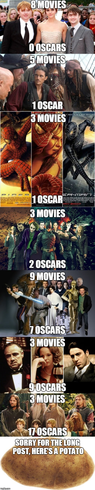

Change language: English
Đây là một số bức ảnh hài hước được thu thập từ trên mạng, mong là mọi người sẽ có thời gian thật vui vẻ:
1.2Thật là tuyet651.2tuyệt vời bạn đã tìm ra easter egg. Bạn có thể chơi nó ngay bây giờ (ngay cả khi bạn đang sử dụng điện thoại).